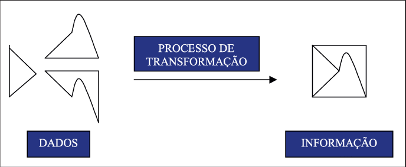
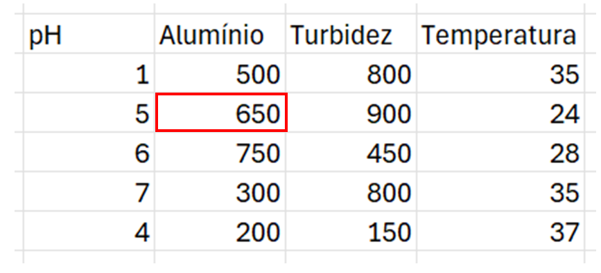
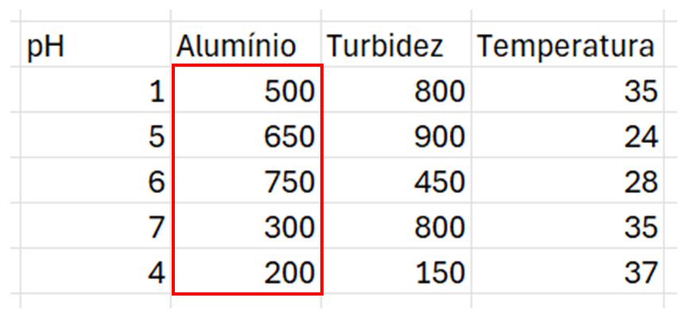

A transformação de dados ecológicos é um passo essencial nas análises estatísticas porque ajuda a ajustar os dados às suposições dos métodos analíticos, realçando padrões ecológicos relevantes e minimizando distorções.
decostand(method = "standardize") garantem que todas as variáveis tenham o mesmo peso.Os métodos estatísticos escalares e vetoriais diferem na forma como tratam e analisam os dados, especialmente em relação à complexidade e dimensionalidade das variáveis.

Figura 2. No conjunto de dados quantitativos contínuos, destaca-se em vermelho a aplicação da transformação escalar.
Definição: Trabalham com variáveis individuais (escalares), ou seja, dados unidimensionais que podem ser representados por um único valor numérico por observação. Essas transformações são aplicadas individualmente a cada valor ou variável sem considerar o contexto geral dos dados.
Exemplos de técnicas:
🧠 Aplicação: úteis para ajustar variáveis individuais e melhorar análises como regressões ou ANOVA.

Figura 3. No conjunto de dados quantitativos contínuos, destaca-se em vermelho a aplicação da transformação vetorial.
Definição: Aqui as transformações consideram o conjunto de dados ou as relações entre variáveis, alterando a estrutura geral.
Exemplos de técnicas:
🧠 Aplicação: essenciais em análises multivariadas, quando as relações entre variáveis importam, como clustering ou modelagem preditiva.
Usar R para realizar transformações ecológicas oferece uma série de vantagens, especialmente para análise de dados de biodiversidade, distribuição de espécies ou monitoramento ambiental.
O R possui pacotes específicos como vegan, ecodist, sp, raster e dismo, amplamente usados na comunidade científica.
O R conta com pacotes como dplyr e tidyr, facilitando a transformação e limpeza de grandes volumes de dados ecológicos.
Pacotes como ggplot2 e lattice permitem a visualização clara das transformações aplicadas.
O R permite análises como índices de diversidade, SDMs, transformações e modelagem multivariada, otimizando a interpretação dos padrões ecológicos.
O pacote vegan fornece funções para transformar dados de comunidades ecológicas e facilitar análises multivariadas.
Função decostand():
decostand(data, method = "method_name", MARGIN = 1)
data: matriz de dados (amostras x espécies)
method: método de padronização ou transformação
MARGIN: 1 para linhas, 2 para colunas
| Método | Descrição |
|---|---|
| total | Divide pelo total de cada amostra (proporção). |
| max | Divide pelo valor máximo. |
| range | Normaliza para [0,1]. |
| standardize | Padroniza para média 0 e desvio padrão 1. |
| normalize | Normaliza para comprimento unitário. |
| hellinger | Raiz quadrada das proporções. |
| log | Aplica log(x+1). |
| pa | Presença/Ausência. |
library(vegan)
data(dune)
dune_hell <- decostand(dune, method = "hellinger")Função wisconsin(): aplica dupla padronização.
dune_wis <- wisconsin(dune)dune_hell <- decostand(dune, method = "hellinger")
dune_nmds <- metaMDS(dune_hell, distance = "bray")
plot(dune_nmds)| Tipo de Dados | Transformação Recomendada |
|---|---|
| Abundância com zeros | Hellinger, Log(x+1), Presença/Ausência |
| Biomassa | Log(x+1), Raiz quadrada |
| Dados ambientais | Padronização (standardize) |
| Proporções | Hellinger ou sem transformação |
A aplicação prática dessas transformações foi apresentada nos encontros online. Para verificar, consulte as gravações do Power Platform & Analytics - Capacitação em R.